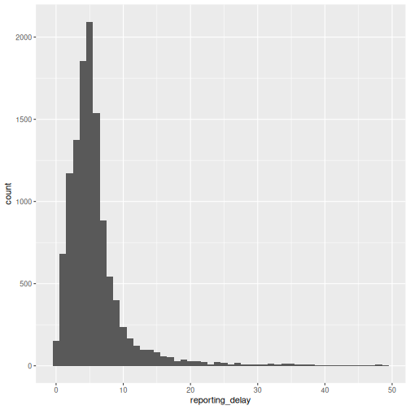
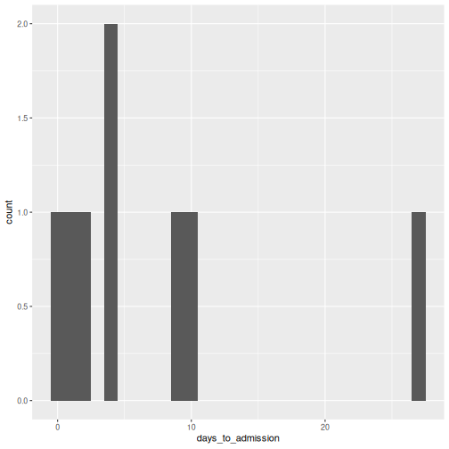

Clean case data
Last updated on 2026-07-07 | Edit this page
Overview
Questions
- How to clean and standardize case data?
Objectives
- Explain how to clean, curate, and standardize case data using cleanepi package.
- Perform essential data-cleaning operations on a real case dataset.
In this episode, we will use a simulated Ebola dataset. To access it:
- Download the
simulated_ebola_2.csv - Save it in the
data/folder.
You also need:
The latest R version: Follow instructions in Setup to configure an RStudio Project and folder
Install these packages if they are not already installed
R
if (!base::require("pak")) install.packages("pak")
pak::pak(c("cleanepi", "rio", "here", "tidyverse"))
If you have any error message, go to the main setup page.
Introduction
In the process of analyzing outbreak data, as in other disciplines of data science, it’s essential to ensure that the dataset is clean, curated, standardized, and validated. This will facilitate accurate (i.e., you are analysing what you think you are analysing) and reproducible (i.e., if someone wants to go back and repeat your analysis steps with your code, you can be confident they will get the same results) analysis.
This episode focuses on cleaning epidemics and outbreaks data using the cleanepi package. For demonstration purposes, we’ll work with a simulated dataset of Ebola cases.
Set Up
In addition to the cleanepi package, we will use the following R packages in this data cleaning workflow:
- here for easy file referencing,
- rio to import the data into R,
- dplyr to perform some data processing operations,
-
magrittr to use its pipe operator
(
%>%).
R
# Load packages
library(cleanepi)
library(rio) # for importing data
library(here) # for easy file referencing
library(tidyverse) # for {dplyr} functions and the pipe %>%
If not installed, use the prerequisite and
spoiler boxes above.
The double-colon (::)
operator
The::in R lets you access functions or objects from a
specific package without attaching the entire package to the search
path. It offers several important advantages, including the
following:
- Telling explicitly which package a function comes from, reducing ambiguity and potential conflicts when several packages have functions with the same name.
- Allowing you to call a function from a package without loading the
whole package with
library().
For example, the command dplyr::filter(data, condition)
means we are calling the filter() function from the
dplyr package.
Load data
The first step is to import the dataset into the working environment.
This can be done by following the guidelines outlined in the Read case data episode. It involves loading
the dataset into the R environment and viewing its
structure and content.
R
# Read data
# e.g., if path to file is data/simulated_ebola_2.csv then:
raw_ebola_data <- rio::import(
here::here("data", "simulated_ebola_2.csv")
) %>%
dplyr::as_tibble() # for a simple data frame output
R
# Print data frame
raw_ebola_data
OUTPUT
# A tibble: 15,003 × 9
V1 `case id` age gender status `date onset` `date sample` lab region
<int> <int> <chr> <chr> <chr> <chr> <chr> <lgl> <chr>
1 1 14905 90 1 "conf… 03/15/2015 06/04/2015 NA valdr…
2 2 13043 twenty… 2 "" Sep /11/13 03/01/2014 NA valdr…
3 3 14364 54 f <NA> 09/02/2014 03/03/2015 NA valdr…
4 4 14675 ninety <NA> "" 10/19/2014 31/ 12 /14 NA valdr…
5 5 12648 74 F "" 08/06/2014 10/10/2016 NA valdr…
6 5 12648 74 F "" 08/06/2014 10/10/2016 NA valdr…
7 6 14274 sevent… female "" Apr /05/15 01/23/2016 NA valdr…
8 7 14132 sixteen male "conf… Dec /29/Y 05/10/2015 NA valdr…
9 8 14715 44 f "conf… Apr /06/Y 04/24/2016 NA valdr…
10 9 13435 26 1 "" 09/07/2014 20/ 09 /14 NA valdr…
# ℹ 14,993 more rowsLet’s first diagnose for format issues the data frame. List all the characteristics in the data frame above that are problematic for data analysis.
Are any of those characteristics familiar from any previous data analysis you have performed?
A quick inspection
Quick exploration and inspection of the dataset are crucial to
identify potential data issues before diving into any analysis tasks.
The cleanepi package simplifies this process with the
scan_data() function. Let’s take a look at how you can use
it:
R
cleanepi::scan_data(raw_ebola_data, format = "percentage")
OUTPUT
Field_names missing numeric date character logical
1 age 6.9047% 89.2475% 0% 10.7525% 0%
2 gender 18.7416% 5.6035% 0% 94.3965% 0%
3 status 5.6549% 0% 0% 100% 0%
4 date onset 0.0067% 0% 91.5945% 8.4055% 0%
5 date sample 0.0133% 0% 100% 0% 0%
6 region 0% 0% 0% 100% 0%The results provide an overview of the content of all character
columns, including column names, and the percentage of some data types
within them. You can see that the column names in the dataset are
descriptive but lack consistency. Some are composed of multiple words
separated by white spaces. Additionally, some columns such as
date_onset contain more than one data type, which means
that they can not be immediately recognized and transformed to
<Date>. There are missing values in the form of an
empty string "" in some and NA in others.
Common operations
This section demonstrates how to perform some common data cleaning operations using the cleanepi package.
Standardizing column names
For this example dataset, standardizing column names typically
involves removing white spaces and connecting different words with
“_”. This practice helps maintain consistency and
readability in the dataset. However, the function used for standardizing
column names offers more options. Type
?cleanepi::standardize_column_names in the console for more
details.
R
sim_ebola_data <- cleanepi::standardize_column_names(raw_ebola_data)
names(sim_ebola_data)
OUTPUT
[1] "v1" "case_id" "age" "gender" "status"
[6] "date_onset" "date_sample" "lab" "region" If you want to maintain certain column names without subjecting them
to the standardization process, you can utilize the keep
argument of the function
cleanepi::standardize_column_names(). This argument accepts
a vector of column names that are intended to be kept unchanged.
Challenge
What differences can you observe in the column names?
Standardize the column names of the input dataset, but keep the first column name as it is
You can try:
R
cleanepi::standardize_column_names(data = raw_ebola_data, keep = "V1")
Removing irregularities
Raw data may contain fields that don’t add any variability to the
data such as empty rows and columns, or
constant columns (where all entries have the same
value). It can also contain duplicated rows. Functions
from cleanepi like remove_duplicates() and
remove_constants() remove such irregularities as
demonstrated in the code chunk below.
R
# Remove constants
sim_ebola_data <- cleanepi::remove_constants(sim_ebola_data)
Print the output to identify what constant column you removed before removing duplicates.
R
# Remove duplicates
sim_ebola_data <- cleanepi::remove_duplicates(sim_ebola_data)
OUTPUT
! Found 5 duplicated rows in the dataset.
ℹ Use `print_report(dat, "found_duplicates")` to access them, where "dat" is
the object used to store the output from this operation.You can get the number and location of the duplicated rows that were
found. Run cleanepi::print_report(), wait for the report to
open in your browser, and find the “Duplicates” tab.
To use this information within R, you can print data frames with
specific sections of the report in the console using the argument
what.
R
# Print a report of found duplicates
cleanepi::print_report(data = sim_ebola_data, what = "found_duplicates")
# Print a report of removed duplicates
cleanepi::print_report(data = sim_ebola_data, what = "removed_duplicates")
Warning: Having constants (and potentially sometimes duplicates) is not always an issue in the data. Do check these before accepting the changes.
Challenge
In the following data frame:
OUTPUT
# A tibble: 6 × 5
col1 col2 col3 col4 col5
<dbl> <dbl> <chr> <chr> <date>
1 1 1 a b NA
2 2 3 a b NA
3 NA NA a <NA> NA
4 NA NA a <NA> NA
5 NA NA a <NA> NA
6 NA NA <NA> <NA> NA What columns or rows are:
- Constant columns?
- Duplicated rows?
Constant column: A column where every value is identical (or all missing). These carry no useful information and can usually be removed before analysis.
Duplicated rows: Rows where every value matches another row exactly. Duplicates can distort counts and statistics, and often signal an issue in how the data was joined or exported.
What output we expect after running
cleanepi::remove_constants()? Why?
We can also assess for replicates using subject IDs. The
cleanepi package offers the function
check_subject_ids() designed precisely for this task as
shown in the below code chunk.
This function checks whether the IDs are unique and meet the required
criteria specified by the user. You can check further in the reference
manual on Check
whether the subject IDs comply with the expected format. When incorrect
IDs are found, the function sends a warning and the user can call the
correct_subject_ids function to correct them.
Replacing missing values
In addition to the irregularities, raw data may contain missing
values, and these may be encoded by different strings (e.g.,
"NA", "", character(0)). To
ensure robust analysis, it is a good practice to replace all missing
values by NA in the entire dataset. Below is a code snippet
demonstrating how you can achieve this in cleanepi for
missing entries represented by an empty string "":
R
sim_ebola_data <- cleanepi::replace_missing_values(
data = sim_ebola_data,
na_strings = ""
)
sim_ebola_data
OUTPUT
# A tibble: 15,000 × 7
v1 case_id age gender status date_onset date_sample
<int> <int> <chr> <chr> <chr> <chr> <chr>
1 1 14905 90 1 confirmed 03/15/2015 06/04/2015
2 2 13043 twenty-five 2 <NA> sep /11/13 03/01/2014
3 3 14364 54 f <NA> 09/02/2014 03/03/2015
4 4 14675 ninety <NA> <NA> 10/19/2014 31/ 12 /14
5 5 12648 74 F <NA> 08/06/2014 10/10/2016
6 6 14274 seventy-six female <NA> apr /05/15 01/23/2016
7 7 14132 sixteen male confirmed dec /29/y 05/10/2015
8 8 14715 44 f confirmed apr /06/y 04/24/2016
9 9 13435 26 1 <NA> 09/07/2014 20/ 09 /14
10 10 14816 thirty f <NA> 06/29/2015 06/02/2015
# ℹ 14,990 more rowsFind more examples in the spoiler below:
By default, cleanepi supports wide range of missing value formats, as listed by the below code chunk:
R
cleanepi::common_na_strings
OUTPUT
[1] "missing" "NA" "N A" "N/A"
[5] "#N/A" "NA " " NA" "N /A"
[9] "N / A" " N / A" "N / A " "na"
[13] "n a" "n/a" "na " " na"
[17] "n /a" "n / a" " a / a" "n / a "
[21] "NULL" "null" "" "\\?"
[25] "\\*" "\\." "not available" "Not Available"
[29] "NOt available" "not avail" "Not Avail" "nan"
[33] "NAN" "not a number" "Not A Number" R
missing_dat <- tibble::tribble(
~case_id, ~outcome, ~gender, ~hospital,
"d1fafd", "NA", "f", "Military Hospital",
"53371b", "nan", "na", "Connaught Hospital",
"missing", "Recover", "f", "other",
"6c286a", "Death", "null", "na",
"NAN", "Recover", "f", "N/A"
)
# print
missing_dat
OUTPUT
# A tibble: 5 × 4
case_id outcome gender hospital
<chr> <chr> <chr> <chr>
1 d1fafd NA f Military Hospital
2 53371b nan na Connaught Hospital
3 missing Recover f other
4 6c286a Death null na
5 NAN Recover f N/A R
# clean
missing_dat %>%
cleanepi::replace_missing_values()
OUTPUT
# A tibble: 5 × 4
case_id outcome gender hospital
<chr> <chr> <chr> <chr>
1 d1fafd <NA> f military hospital
2 53371b <NA> <NA> connaught hospital
3 <NA> recover f other
4 6c286a death <NA> <NA>
5 <NA> recover f <NA> At this point, we removed a number of columns and rows. Compare the
dimensions of raw_ebola_data and
sim_ebola_data.
Epidemiology related operations
In addition to common data cleansing tasks, such as those discussed in the above section, the cleanepi package offers additional functionalities tailored specifically for processing and analyzing outbreak and epidemic data. This section covers some of these specialized tasks, mainly focused on:
- date columns (format, sequence, and time span between two or more),
- data dictionaries for categorical variables, and
- converting numbers written in characters to numeric values.
Standardizing dates
An epidemic dataset typically contains Date columns for
different events, such as the date of infection, date of symptoms onset,
etc. These dates can come in different date formats, and it is good
practice to standardize them to benefit from the powerful R
functionalities designed to handle date values in downstream analyses.
The cleanepi package provides functionality for
converting date columns of epidemic datasets into ISO8601 format,
ensuring consistency across the different date columns. Here’s how you
can use it on our simulated dataset:
R
sim_ebola_data <- cleanepi::standardize_dates(
sim_ebola_data,
target_columns = c("date_onset", "date_sample")
)
OUTPUT
! Detected 1142 values that comply with multiple formats and no values that are
outside of the specified time frame.
ℹ Enter `print_report(data = dat, "date_standardization")` to access them,
where "dat" is the object used to store the output from this operation.R
sim_ebola_data
OUTPUT
# A tibble: 15,000 × 7
v1 case_id age gender status date_onset date_sample
<int> <int> <chr> <chr> <chr> <date> <date>
1 1 14905 90 1 confirmed 2015-03-15 2015-04-06
2 2 13043 twenty-five 2 <NA> 2013-09-11 2014-01-03
3 3 14364 54 f <NA> 2014-02-09 2015-03-03
4 4 14675 ninety <NA> <NA> 2014-10-19 2014-12-31
5 5 12648 74 F <NA> 2014-06-08 2016-10-10
6 6 14274 seventy-six female <NA> 2015-04-05 2016-01-23
7 7 14132 sixteen male confirmed NA 2015-10-05
8 8 14715 44 f confirmed NA 2016-04-24
9 9 13435 26 1 <NA> 2014-07-09 2014-09-20
10 10 14816 thirty f <NA> 2015-06-29 2015-02-06
# ℹ 14,990 more rowsThis function converts the values in the target columns into the YYYY-mm-dd format.
How is this possible?
We invite you to find the key package that makes this standardization possible inside cleanepi by reading the “Details” section of the Standardize date variables reference manual.
Also, check how to use the orders argument if you want
to target United States (U.S.) format character strings. Join the
discussion about this
reproducible example.
Checking sequence of dated-events
Ensuring the correct order and sequence of dated events is crucial in
epidemiological data analysis, especially when analyzing infectious
diseases where the timing of events like symptom onset and sample
collection is essential. The cleanepi package provides a
helpful function called check_date_sequence() designed for
this purpose.
Here’s an example of a code chunk demonstrating the usage of the
function check_date_sequence() in the first 100 records of
our simulated Ebola dataset.
R
# check for the first 100 rows
sim_ebola_100 <- sim_ebola_data %>% dplyr::slice_head(n = 100)
# check for date sequence
cleanepi::check_date_sequence(
data = sim_ebola_100,
target_columns = c("date_onset", "date_sample")
)
OUTPUT
ℹ Cannot check the sequence of date events across 37 rows due to missing data.OUTPUT
! Detected 24 incorrect date sequences at lines: "8, 15, 18, 20, 21, 23, 26,
28, 29, 32, 34, 35, 37, 38, 40, 43, 46, 49, 52, 54, 56, 58, 60, 63".
ℹ Enter `print_report(data = dat, "incorrect_date_sequence")` to access them,
where "dat" is the object used to store the output from this operation.This functionality is crucial for ensuring data integrity and accuracy in epidemiological analyses, as it helps identify any inconsistencies or errors in the chronological order of events, allowing you to address them appropriately.
The cleanepi package does not automatically remove inconsistent observations; it only identifies them and reports their indices. To remove them, use the code below:
R
# 1. Get the indices of incorrect row from the output of the above code chunk
obs_incorrect <- c(
8, 15, 18, 20, 21, 23, 26, 28, 29, 32, 34, 35,
37, 38, 40, 43, 46, 49, 52, 54, 56, 58, 60, 63
)
# 2. Drop observations with missings on dates tested
dat_without_missings_dates <- sim_ebola_100 %>%
dplyr::filter(!(is.na(date_onset) | is.na(date_sample)))
# 3. Drop inconsistent observations
dat_without_missings_dates %>%
dplyr::slice(-obs_incorrect)
OUTPUT
# A tibble: 39 × 7
v1 case_id age gender status date_onset date_sample
<int> <int> <chr> <chr> <chr> <date> <date>
1 1 14905 90 1 confirmed 2015-03-15 2015-04-06
2 2 13043 twenty-five 2 <NA> 2013-09-11 2014-01-03
3 3 14364 54 f <NA> 2014-02-09 2015-03-03
4 4 14675 ninety <NA> <NA> 2014-10-19 2014-12-31
5 5 12648 74 F <NA> 2014-06-08 2016-10-10
6 6 14274 seventy-six female <NA> 2015-04-05 2016-01-23
7 9 13435 26 1 <NA> 2014-07-09 2014-09-20
8 11 13993 forty-nine 2 suspected 2015-01-21 2016-06-18
9 12 13698 four 2 suspected 2014-11-27 2015-05-28
10 13 13976 sixty-seven M suspected 2014-10-20 2016-06-26
# ℹ 29 more rowsNote that we check for a subset of 100 rows. The whole data frame contains more than 600 incorrect date sequences. Try it out yourself!
Calculating time span between different date events
In epidemiological data analysis, it is also useful to track and analyze time-dependent events from linelist.
One example is the reporting delay (i.e., the time elapsed from the date of case symptom onset to the date of case report). In the next set of tutorials, we will learn how to acccount for this in the real-time analysis of outbreaks.
Another example is the time delay from the date of sample collection from a suspected case to the date of sample already tested (i.e., with known result), contributing to the total reporting delay (Marinović et al., 2015). It can inform the assessment of the laboratory testing capacity of the region responding to the outbreak.
The most common example is to calculate the age of all the subjects given their dates of birth (i.e., the time difference between today and their date of birth).
The cleanepi package offers a convenient function for calculating the time elapsed between two dated events.
For example, the below code snippet utilizes the function
cleanepi::timespan() to compute reporting
delay between the date of symptom onset
(date_onset) and date of case confirmation
(date_sample)
R
sim_ebola_data <- cleanepi::timespan(
data = sim_ebola_data,
target_column = "date_onset",
end_date = "date_sample",
span_unit = "days",
span_column_name = "reporting_delay"
)
sim_ebola_data %>%
dplyr::select(case_id, date_sample, reporting_delay)
OUTPUT
# A tibble: 15,000 × 3
case_id date_sample reporting_delay
<int> <date> <dbl>
1 14905 2015-04-06 22
2 13043 2014-01-03 114
3 14364 2015-03-03 387
4 14675 2014-12-31 73
5 12648 2016-10-10 855
6 14274 2016-01-23 293
7 14132 2015-10-05 NA
8 14715 2016-04-24 NA
9 13435 2014-09-20 73
10 14816 2015-02-06 -143
# ℹ 14,990 more rowsAfter executing the function cleanepi::timespan(), one
new column named reporting_delay is added to the
sim_ebola_data dataset. This column
represent the calculated time elapsed since the date of symptom onset to
the date of sample collection measured in days.
We can describe this delay using a visualization:
R
# before plotting:
# * keep unique IDs,
# * keep plausible a subset consistent observations (from 0 to 50 days)
sim_ebola_delay <- sim_ebola_data %>%
dplyr::distinct(case_id, .keep_all = TRUE) %>%
dplyr::filter(reporting_delay >= 0, reporting_delay < 50)
sim_ebola_delay %>%
ggplot(aes(x = reporting_delay)) +
geom_histogram(binwidth = 1)

We can also use summary statistics or probability distribution parameters to describe different delays. We will use them in the upcoming tutorials. For a refresher, you can review introductory concepts with some episodes introducing delays for outbreak data.
Challenge
Read the test_df.RDS data frame within the
cleanepi package to:
- Clean and standardize the required elements to get this done.
- Calculate the time elapsed since the date of positive test until the date of admission.
- Plot the calculated delay using ggplot2 keeping the plausible values.
R
dat <- readRDS(
file = system.file("extdata", "test_df.RDS", package = "cleanepi")
) %>%
dplyr::as_tibble()
Before calculating the age, you may need to:
- standardize column names
- standardize dates columns
You may need to drop the negative times to visualise plausible values.
R
dat_clean <- dat %>%
# standardize column names and dates
cleanepi::standardize_column_names() %>%
cleanepi::standardize_dates(
target_columns = c("date_first_pcr_positive_test", "date_of_admission")
) %>%
# calculate the delays in 'days' from positive test to admission
cleanepi::timespan(
target_column = "date_first_pcr_positive_test",
end_date = "date_of_admission",
span_unit = "days",
span_column_name = "days_to_admission"
)
OUTPUT
! Detected 4 values that comply with multiple formats and no values that are
outside of the specified time frame.
ℹ Enter `print_report(data = dat, "date_standardization")` to access them,
where "dat" is the object used to store the output from this operation.R
dat_clean %>%
dplyr::select(
study_id,
date_first_pcr_positive_test,
date_of_admission,
days_to_admission
)
OUTPUT
# A tibble: 10 × 4
study_id date_first_pcr_positive_test date_of_admission days_to_admission
<chr> <date> <date> <dbl>
1 PS001P2 2020-12-01 2020-12-01 0
2 PS002P2 2021-01-01 2021-01-28 27
3 PS004P2-1 2021-02-11 2021-02-15 4
4 PS003P2 2021-02-01 2021-02-11 10
5 P0005P2 2021-02-16 2021-02-17 1
6 PS006P2 2021-05-02 2021-02-17 -74
7 PB500P2 2021-02-19 2021-02-28 9
8 PS008P2 2021-09-20 2021-02-22 -210
9 PS010P2 2021-02-26 2021-03-02 4
10 PS011P2 2021-03-03 2021-03-05 2R
dat_clean %>%
dplyr::filter(days_to_admission >= 0) %>%
ggplot(aes(x = days_to_admission)) +
geom_histogram(binwidth = 1)

What differentiates cleanepi::timespan() from
dplyr::mutate() is in how easily you can calculate time
differences in different time units (using the argument
span_unit) and how you can retrieve remainer time in a
different column and different time unit (using
span_remainder_unit). Check the spoiler below for an
example:
Calculate the age in years of each subject until the \(3^{rd}\) of January 2025
("2025-01-03") from their date of birth, and the remainder
time in months.
R
dat_age <- dat_clean %>%
# standardize column names and dates
cleanepi::standardize_dates(
target_columns = c("date_of_birth")
) %>%
# calculate the age in 'years' and return the remainder in 'months'
cleanepi::timespan(
target_column = "date_of_birth",
end_date = lubridate::ymd("2025-01-03"),
span_unit = "years",
span_column_name = "age_in_years",
span_remainder_unit = "months"
)
OUTPUT
! Detected 4 values that comply with multiple formats and no values that are
outside of the specified time frame.
ℹ Enter `print_report(data = dat, "date_standardization")` to access them,
where "dat" is the object used to store the output from this operation.
! Found <numeric> values that could also be of type <Date> in column:
date_of_birth.
ℹ It is possible to convert them into <Date> using: `lubridate::as_date(x,
origin = as.Date("1900-01-01"))`
• where "x" represents here the vector of values from these columns
(`data$target_column`).R
dat_age %>%
dplyr::select(
study_id,
date_of_birth,
age_in_years,
remainder_months
)
OUTPUT
# A tibble: 10 × 4
study_id date_of_birth age_in_years remainder_months
<chr> <date> <dbl> <dbl>
1 PS001P2 1972-01-06 52 11
2 PS002P2 1952-02-20 72 10
3 PS004P2-1 1961-06-15 63 6
4 PS003P2 1947-11-11 77 1
5 P0005P2 2000-09-26 24 3
6 PS006P2 NA NA NA
7 PB500P2 1989-03-11 35 9
8 PS008P2 1976-05-10 48 7
9 PS010P2 1991-09-23 33 3
10 PS011P2 1991-08-02 33 5The columns of age_in_years and
remainder_months are added to the
dat_age dataset, and the remaining time
measured in months.
To calculate the age in years until today’s date,
you can use Sys.Date() as end date.
Dictionary-based substitution
In the realm of data pre-processing, it’s common to encounter scenarios where certain columns in a dataset, such as the “gender” column in our simulated Ebola dataset, are expected to have specific values or factors. However, it’s also common for unexpected or erroneous values to appear in these columns, which need to be replaced with the appropriate values. The cleanepi package offers support for dictionary-based substitution, a method that allows you to replace values in specific columns based on mappings defined in a data dictionary. This approach ensures consistency and accuracy in data cleaning.
Moreover, cleanepi provides a built-in dictionary specifically tailored for epidemiological data. The example dictionary below includes mappings for the “gender” column.
R
test_dict <- base::readRDS(
system.file("extdata", "test_dict.RDS", package = "cleanepi")
) %>%
dplyr::as_tibble()
test_dict
OUTPUT
# A tibble: 6 × 4
options values grp orders
<chr> <chr> <chr> <int>
1 1 male gender 1
2 2 female gender 2
3 M male gender 3
4 F female gender 4
5 m male gender 5
6 f female gender 6Now, we can use this dictionary to standardize values of the “gender”
column according to predefined categories. Below is an example code
chunk demonstrating how to perform this using the
clean_using_dictionary() function from the
cleanepi package.
R
sim_ebola_data <- cleanepi::clean_using_dictionary(
data = sim_ebola_data,
dictionary = test_dict
)
sim_ebola_data
OUTPUT
# A tibble: 15,000 × 8
v1 case_id age gender status date_onset date_sample reporting_delay
<int> <int> <chr> <chr> <chr> <date> <date> <dbl>
1 1 14905 90 male confi… 2015-03-15 2015-04-06 22
2 2 13043 twenty-fi… female <NA> 2013-09-11 2014-01-03 114
3 3 14364 54 female <NA> 2014-02-09 2015-03-03 387
4 4 14675 ninety <NA> <NA> 2014-10-19 2014-12-31 73
5 5 12648 74 female <NA> 2014-06-08 2016-10-10 855
6 6 14274 seventy-s… female <NA> 2015-04-05 2016-01-23 293
7 7 14132 sixteen male confi… NA 2015-10-05 NA
8 8 14715 44 female confi… NA 2016-04-24 NA
9 9 13435 26 male <NA> 2014-07-09 2014-09-20 73
10 10 14816 thirty female <NA> 2015-06-29 2015-02-06 -143
# ℹ 14,990 more rowsThis approach simplifies the data cleaning process, ensuring that categorical variables in epidemiological datasets are accurately categorized and ready for further analysis.
Note that when a column in the dataset contains values that are not
in the dictionary, the function
cleanepi::clean_using_dictionary() will raise an error. You
can start a custom dictionary with a data frame inside or outside R and
use the function cleanepi::add_to_dictionary() to include
new elements in the dictionary. For example:
R
new_dictionary <- tibble::tibble(
options = "0",
values = "female",
grp = "sex",
orders = 1L
) %>%
cleanepi::add_to_dictionary(
option = "1",
value = "male",
grp = "sex",
order = NULL
)
new_dictionary
OUTPUT
# A tibble: 2 × 4
options values grp orders
<chr> <chr> <chr> <int>
1 0 female sex 1
2 1 male sex 2There are more details in the section about “Dictionary-based data substituting” in the package vignette.
Converting to numeric values
In the raw dataset, some columns can come with mixture of character
and numerical values, and you will often want to convert character
values for numbers explicitly into numeric values (e.g.,
"seven" to 7). For example, in our simulated
data set, in the age column some entries are written in words. In
cleanepi the function convert_to_numeric()
does such conversion as illustrated in the below code chunk.
R
sim_ebola_data <- cleanepi::convert_to_numeric(
data = sim_ebola_data,
target_columns = "age"
)
sim_ebola_data
OUTPUT
# A tibble: 15,000 × 8
v1 case_id age gender status date_onset date_sample reporting_delay
<int> <int> <dbl> <chr> <chr> <date> <date> <dbl>
1 1 14905 90 male confirmed 2015-03-15 2015-04-06 22
2 2 13043 25 female <NA> 2013-09-11 2014-01-03 114
3 3 14364 54 female <NA> 2014-02-09 2015-03-03 387
4 4 14675 90 <NA> <NA> 2014-10-19 2014-12-31 73
5 5 12648 74 female <NA> 2014-06-08 2016-10-10 855
6 6 14274 76 female <NA> 2015-04-05 2016-01-23 293
7 7 14132 16 male confirmed NA 2015-10-05 NA
8 8 14715 44 female confirmed NA 2016-04-24 NA
9 9 13435 26 male <NA> 2014-07-09 2014-09-20 73
10 10 14816 30 female <NA> 2015-06-29 2015-02-06 -143
# ℹ 14,990 more rowsMultiple language support
Thanks to the numberize package, we can convert numbers written in English, French or Spanish into positive integer values.
Multiple operations at once
You can combine multiple data cleaning tasks via the base R pipe
(|>) or the magrittr pipe
(%>%) operator, as shown in the code snippet below.
R
# Perform the cleaning operations using the pipe (%>%) operator
cleaned_data <- raw_ebola_data %>%
# common operations ---------------------------------------
cleanepi::standardize_column_names() %>%
cleanepi::remove_constants() %>%
cleanepi::remove_duplicates() %>%
cleanepi::replace_missing_values(na_strings = "") %>%
cleanepi::check_subject_ids(
target_columns = "case_id",
range = c(1, 15000)
) %>%
# epidemiological operations ------------------------------
cleanepi::standardize_dates(
target_columns = c("date_onset", "date_sample")
) %>%
cleanepi::check_date_sequence(
target_columns = c("date_onset", "date_sample")
) %>%
cleanepi::timespan(
target_column = "date_onset",
end_date = "date_sample",
span_unit = "days",
span_column_name = "reporting_delay"
) %>%
cleanepi::clean_using_dictionary(dictionary = test_dict) %>%
cleanepi::convert_to_numeric(target_columns = "age")
Performing data cleaning operations individually can be
time-consuming and error-prone. The cleanepi package
simplifies this process by offering a convenient wrapper function called
clean_data(), which allows you to perform multiple
operations at once.
When no cleaning operation is specified, the
clean_data() function automatically applies a series of
data cleaning operations to the input dataset. Here’s an example code
chunk illustrating how to use clean_data() on a raw
simulated Ebola dataset:
R
one_step_clean_data <- cleanepi::clean_data(raw_ebola_data)
OUTPUT
ℹ Cleaning column namesOUTPUT
ℹ Removing constant columns and empty rowsOUTPUT
ℹ Removing duplicated rowsOUTPUT
! Found 5 duplicated rows in the dataset.
ℹ Use `print_report(dat, "found_duplicates")` to access them, where "dat" is
the object used to store the output from this operation.Challenge
Have you noticed that cleanepi contains a set of functions to diagnose the cleaning status of the dataset and another set to perform cleaning actions on it?
To identify both groups:
- On a piece of paper, write the names of each function under the corresponding column:
| Diagnose cleaning status | Perform cleaning action |
|---|---|
| … | … |
Cleaning report
The cleanepi package generates a comprehensive report detailing the findings and actions of all data cleansing operations conducted during the analysis.
This report is presented as a HTML file. If it does not
opens automatically, access to the temporary folder. Copy the path
printed in the R console, go to to your local file explorer, paste the
path in the finder bar, you will find there the HTML
file.
Each section corresponds to a specific data cleansing operation, and clicking on each section allows you to access the results of that particular operation. This interactive approach enables users to efficiently review and analyze the effects of individual cleansing steps within the broader data cleansing process.
You can view the report using:
R
cleanepi::print_report(data = cleaned_data)